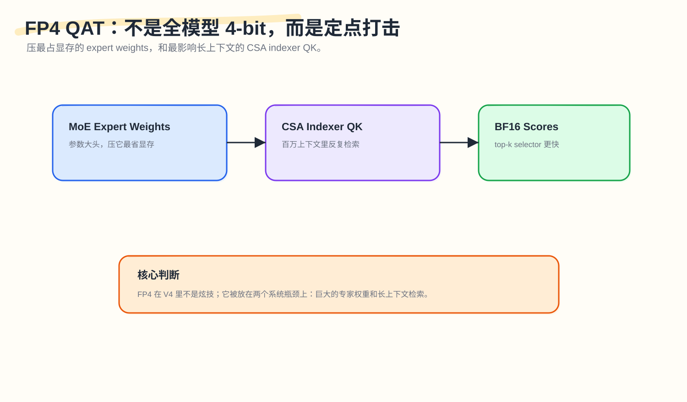
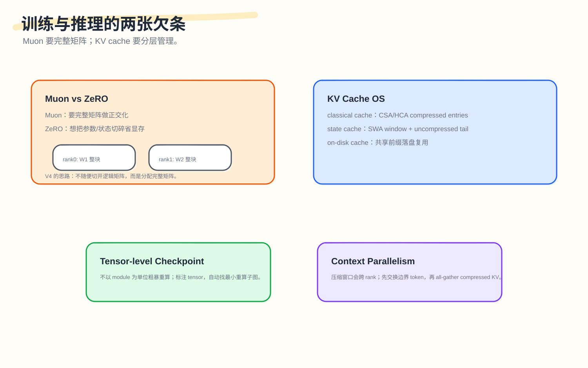

DeepSeek‑V4's Hidden Thread II: Training a Trillion-Parameter Machine Without Losing Control

The first article covered memory: why V4 can use 1M context, and why the key isn’t a larger input box but rather splitting history into different forms — raw text for recent history, compressed-then-retrieved for mid-range, heavily-compressed-then-scanned for distant.
This article covers “control.” The other face of the same model:
How is something this complex trained? Reproduced? Deployed? How do you keep it from becoming a pile of hand-written CUDA and undebuggable black boxes?
V4 introduces many new pieces — CSA/HCA, mHC, MoE, FP4, Muon, long-context Context Parallelism, KV cache layering, deterministic kernels. Each one leaves an IOU in the training framework. Leave them unpaid, and even the most elegant model architecture stays locked in a paper diagram.
This article breaks down each IOU:
- Kernel debt: complex operators can’t be assembled from small PyTorch ops, and can’t be entirely hand-written CUDA either
- Reproducibility debt: batch changes, atomicAdd, and split-K can all produce different results
- Low-precision debt: FP4 can’t be applied indiscriminately — it must hit the right targets
- Optimizer debt: Muon needs intact matrices; ZeRO wants to shard them
- Long-context training debt: CSA/HCA’s compression windows cross Context Parallel rank boundaries
- Inference debt: KV cache has evolved into a set of states and storage policies, far beyond a single unified buffer
V4‑Pro has 1.6T total parameters, 49B activated; V4‑Flash has 284B total parameters, 13B activated — both support 1M context. (Hugging Face) At this scale, none of these IOUs are deferrable engineering choices — they’re system constraints that must be designed upfront.
1. Kernel Debt: Complex Operators Can’t Be Assembled From Small Ops
Start with the most basic problem.
If you write a complex attention variant in PyTorch, the easiest approach is to decompose it into many small operators:
|
|
Fast to write, but two runtime problems emerge.
First, intermediate results repeatedly read and write HBM. Each small operator may write its result back to GPU memory, only for the next operator to read it back.
Second, each kernel call carries host-side overhead. Python checks parameters, the framework dispatcher makes choices, pybind/ABI conversion happens, and only then does the GPU kernel launch.
When a kernel is large — say a big GEMM running for several milliseconds — a few dozen microseconds of host overhead barely matters. But many of V4’s highly optimized kernels can be quite small. At that point, the CPU-side fixed cost becomes a visible bottleneck.
This is TileLang’s role in V4. It’s not simply “a DSL for writing CUDA.” It’s more like a pipeline for producing complex kernels.

TileLang lets developers describe tiles, layout, pipeline, and memory movement at a higher level. At compile time, it generates two things: a device kernel (the code that actually runs on the GPU) and a host launcher (lightweight CPU code for checking parameters, packing arguments, and launching).
V4 moves much of the host-side logic that previously lived in Python into the generated host code. This means dtype, shape, rank, stride, and device checks no longer need to go through Python’s dynamic attribute access on every call. TileLang’s documentation explains that it automatically inserts argument count, pointer kind, dtype, shape, strides, and device checks into the generated host stub, specifically to avoid handwritten Python checks and reduce Python interpreter and attribute access overhead. (TileLang)
A simple illustration:
Traditional approach:
|
|
After Host Codegen:
|
|
This isn’t “skipping checks.” Quite the opposite — it moves checks into generated code. The checks still exist, but no longer pass through the Python hot path.
TVM-FFI and DLPack matter here too. TVM-FFI documentation explains that it shares tensor descriptions and memory across PyTorch, JAX, PaddlePaddle, and other frameworks via DLPack; creating a TVM-FFI tensor from a PyTorch tensor shares the same underlying buffer, and converting back doesn’t copy. (TVM-FFI)
Optimizing complex kernels can’t focus only on GPU code. The CPU path that calls the kernel is also a bottleneck — that’s exactly what Host Codegen addresses.
2. Index Safety Debt: You Can’t Manually Prove Complex Subscripts Forever
The most error-prone part of hand-written CUDA isn’t the matrix multiplication logic — it’s the index arithmetic.
A long-context attention kernel might simultaneously involve block_id, warp_id, lane_id, tile offsets, strides, padding, masks, vectorized load widths, and shared memory swizzle patterns. Developers must answer a stack of questions: Can this load go out of bounds? Is the address 16-byte aligned? Can shared memory writes conflict? Can barriers be eliminated? Can the loop be vectorized?
For simple expressions, compilers can figure it out. For complex ones, conservative rules apply by default. Conservative means adding masks, avoiding vectorization, adding barriers — slower kernels. Manual proofs are error-prone.
TileLang in V4 explores an interesting direction: SMT-solver-assisted formal integer analysis. In plain terms: hand the integer constraints to a solver like Z3, let it help the compiler prove whether certain accesses are safe. Z3 is an SMT solver developed by Microsoft Research, used to determine satisfiability of first-order logic formulas with arithmetic, bit-vector, array, and other background theories — commonly used in program verification and compiler-related contexts. (Z3)
A simplified example.
Given:
|
|
Prove:
|
|
If padded_N is the 128-aligned length, the solver can prove this access is safe. Real kernel expressions are more complex, but the idea is the same: transforming “I think this won’t overflow” into “under these constraints, this can be proven not to overflow.”
The value isn’t showing off. It solves the trust problem during complex kernel iteration. Without formal analysis, compilers must be conservative, or developers must hand-code many special cases. With a solver, more optimizations can be opened automatically — kernels don’t just need to compute fast; the compiler needs to understand why they’re safe.
3. Reproducibility Debt: The Last Few Bits Matter for Debugging
When people first hear about bitwise reproducibility, they often treat it as perfectionism. Do the last few bits of floating-point values really matter?
In small experiments, maybe not. In trillion-parameter MoE training, they do.
Because when training goes wrong, you need to reproduce it.
If a loss spike occurs at one step, you need to know whether it’s a data issue, a routing issue, an expert outlier, a communication ordering issue, a nondeterministic atomicAdd in some kernel, or a hardware anomaly. If the same input produces slightly different results on each run, narrowing down the cause becomes very difficult.
PyTorch documentation also notes that perfect reproducibility can’t always be guaranteed across versions or platforms; deterministic operations are typically slower but save time on experiments, debugging, and regression testing. PyTorch provides torch.use_deterministic_algorithms(), which makes available operations use deterministic algorithms and raises errors if only nondeterministic algorithms exist. (PyTorch)(PyTorch Det)
V4 focuses on two levels.
The first is deterministic: same input, same environment, same batch, repeated runs produce identical results.
The second is batch-invariant: a single sample produces the same output whether run alone or batched with other samples.
The second is harder.
Why can changing the batch change results? A common cause is split-KV or split-K. To improve parallelism, systems may split the same sequence’s KV or the K dimension of matrix multiplication across multiple SMs or splits, then merge partial results. If the merge order depends on batch layout or runtime scheduling, floating-point addition order changes.
Floating-point addition isn’t strictly associative:
|
|
and
|
|
are identical in real-number mathematics but may differ in the last few bits with floating-point.

Similar issues arise in attention backward. Multiple queries may attend to the same KV entry. During backpropagation, they all contribute gradients to the same dKV:
|
|
The naive approach uses atomicAdd. Which thread adds first is not fixed. Change the order, and the last few bits may change.
V4’s approach: each SM first writes to its own accumulation buffer, then performs a deterministic reduction in a fixed order. This sacrifices some buffer space and extra reduction work but gains stable results. The same pattern appears in MoE backward — token order preprocessing and buffer isolation prevent multiple ranks from simultaneously writing to the same receive location in undefined order. (DeepSeek-AI)
If a production request causes a problem and you reproduce it in isolation, but get a different result because it was originally batched with other requests — you can’t debug that bug. Batch-invariant kernels are exactly what solves this problem.
4. Low-Precision Debt: FP4 Must Hit the Right Targets, Not Be Applied Everywhere
Low precision is tempting. Cutting from 16-bit to 4-bit reduces both memory and bandwidth pressure. But V4’s FP4 QAT is notable for not pursuing “whole-model 4-bit” as a goal. Instead, it places FP4 at exactly two positions where compression is most valuable.
The first is MoE expert weights.
MoE’s total parameter count is large, but each token activates only a subset of experts. Expert weights are one of the largest contributors to memory. Compressing them yields direct benefits.
The second is the CSA indexer QK path.
At 1M context, CSA’s indexer repeatedly computes QK relevance scores to select top-k compressed entries. This path carries the core cost of long-context retrieval — different in nature from ordinary model weights. V4 runs the indexer QK’s activations, cache, loads, and multiplications at FP4, compressing the cost of “long-context retrieval at every step.”

The training path for MoE expert weights is also engineered carefully. V4 maintains FP32 master weights, quantizes to FP4 during the forward pass, then dequantizes to FP8 for computation. The paper explains that FP4-to-FP8 dequantization can be lossless because FP8 E4M3 has a larger dynamic range than FP4 E2M1, absorbing the variation from FP4 sub-block scale. This lets the backward pass reuse the existing FP8 mixed-precision training framework without rewriting the entire training system for FP4. (DeepSeek-AI)
This matters. In many low-precision approaches, the real challenge is whether the training system can absorb the change — whether the forward pass runs is almost secondary. V4’s path is essentially embedding FP4 into the existing FP8 framework, minimizing system intrusion.
V4 also reduces index scores from FP32 to BF16 for the top-k selector. The paper reports a 2× speedup in the top-k selector while KV entry recall stays at 99.7%. (DeepSeek-AI)
This is targeted precision reduction: FP4 doesn’t spread everywhere. It lands on the two actual system bottlenecks — large expert weights and long-context indexer QK — leaving everything else unchanged.
5. Optimizer Debt: Muon Needs Intact Matrices; ZeRO Wants to Shard Them
The Muon section is easy to gloss over as “used a new optimizer.” But it imposes a very specific requirement on the training framework: it needs to see complete matrices.
Optimizers like AdamW are essentially element-wise updates. Each parameter has its own moment state; parameter matrices can be sharded across ranks with no fundamental issue.
Muon is different. It applies approximate orthogonalization to the matrix gradient or momentum. The core operation relates to Newton-Schulz iterations. Recent theoretical analysis of Muon focuses on momentum orthogonalization with a few Newton-Schulz steps and its relationship to the ideal SVD-polar update. (Muon)
This means a weight matrix should ideally participate in updates as a complete matrix.
But ZeRO’s fundamental goal is memory savings: sharding optimizer states, gradients, and parameters across ranks. It naturally prefers to split things up.
The conflict is direct: Muon needs complete matrices for orthogonalization, while ZeRO’s instinct is to shard matrices to save memory — they collide head-on over parameter sharding granularity. V4’s approach is neither to simply abandon ZeRO nor to simply abandon Muon. For dense parameters, it limits Muon ZeRO parallelism scale, using a knapsack algorithm to assign complete matrices to different ranks such that each rank manages a roughly equal total matrix volume. For MoE parameters, where there are many expert matrices, it flattens and distributes down/up/gate projections separately, but still ensures no logically independent matrix is split. (DeepSeek-AI)

Think of it this way: ordinary ZeRO splits W1 into pieces, with rank0/1/2/3 each holding a shard; V4’s Muon-ZeRO instead assigns all of W1 to rank0, all of W2 to rank1, all of W3 to rank2 — sacrificing distribution flexibility to preserve the matrix structure that Muon requires.
V4 also mentions a small detail: consecutively same-shape parameters are automatically merged, allowing Newton-Schulz to use batched execution, improving hardware utilization. MoE gradients are randomly rounded to BF16 when synchronized across data-parallel ranks to reduce communication, but to avoid low-precision accumulation error, rather than using tree/ring reduce-scatter directly, ranks first exchange local gradients via all-to-all, then each rank sums locally in FP32. (DeepSeek-AI)
Muon isn’t an isolated algorithmic choice; it constrains how the distributed system must shard parameters. This bidirectional constraint between optimizer and training framework is stated clearly in V4. Any future optimizer that doesn’t rely on element-wise updates will encounter the same tension.
6. mHC Debt: More Expressiveness, More Activation and Pipeline Communication
mHC — manifold-constrained hyper-connections — is the structure in V4 that replaces ordinary residual connections. We won’t expand its mathematics here; we look only at the system consequences.
mHC means the residual stream is no longer a single path but multiple residual streams. In V4, n_hc = 4. This enhances model expressiveness and signal flow, but introduces two training system costs: activation memory increases, and data transferred between pipeline stages increases. Left unaddressed, mHC’s benefits could be consumed by training overhead.
V4 addresses this in three ways.
First, writing fused mHC kernels. mHC includes pre-block mixing, post-block mixing, residual mixing, and similar operations. Decomposing them into many small operators would incur extra launches and HBM traffic.
Second, selective recomputation. Not all activations are stored, and not all are recomputed. Cheap intermediate quantities can be recomputed during the backward pass; expensive operations are avoided in recomputation.
Third, adjusting the DualPipe 1F1B overlap. mHC increases pipeline communication; the existing overlap schedule needs to be adapted so that some mHC operations can run concurrently. The paper reports these optimizations limit mHC’s wall-time overhead to 6.7% of an overlapped 1F1B pipeline stage. (DeepSeek-AI) One additional expression path, and 6.7% is the invoice it leaves for the training system.
7. Context Parallelism Debt: CSA/HCA’s Compression Windows Cross Rank Boundaries
Long-context training typically requires Context Parallelism. When a sequence is too long for a single GPU, the sequence dimension is split across multiple ranks:
|
|
Standard attention can be built around this split with appropriate communication. But CSA/HCA add compression windows.
CSA compresses every m tokens into one entry. HCA compresses every m' tokens into one entry. The problem: compression windows may cross rank boundaries.
For example, with m=4:
|
|
These 4 tokens should be compressed together, but they’re distributed across two ranks. If rank1 only looks at its own local tokens, it can’t produce the correct entry.
V4’s solution has two steps.
Step 1: neighbor communication. Rank i sends its last m uncompressed KV entries to rank i+1. This lets the next rank correctly handle cross-boundary compression blocks.
Step 2: each rank compresses locally, then all-gather compressed KV. Each rank first produces fixed-length compressed entries locally, then performs an all-gather. A fused select-and-pad operator then organizes everything into a globally visible compressed KV structure, with padding at the tail. (DeepSeek-AI)
This is the same class of problem as sharding and aggregation in distributed databases: slicing data isn’t enough — you must also ensure that cross-shard group-by semantics aren’t broken. Ordinary CP only slices sequences; CSA/HCA must also ensure that compression groups aren’t truncated at rank boundaries.
8. Activation Checkpointing Debt: Can’t Use Coarse Module-Level Granularity
During large model training, activation memory is one of the primary GPU memory pressures. Standard activation checkpointing: during the forward pass, don’t store certain intermediate results; recompute them during the backward pass.
The problem: many frameworks checkpoint at module granularity. A Transformer block is either fully stored or fully recomputed. That granularity is too coarse.
Within a single module, some tensors are large but cheap to recompute; some are small but expensive to recompute; some are just reshapes sharing the same storage. Module-level checkpointing can’t be optimal.
Hand-writing forward/backward can be more fine-grained, but the development cost is high and error-prone.
V4’s approach is tensor-level activation checkpointing. Developers write only the forward pass and annotate individual tensors. The framework uses TorchFX to trace the computation graph, performs backward traversal from annotated tensors, finds the minimal recomputation subgraph, and inserts recomputation logic into the backward pass. The paper also mentions that recomputation reuses the original storage pointer to avoid extra GPU memory copies; tensors sharing underlying storage (e.g., reshape input and output) are automatically deduplicated. (DeepSeek-AI)
Think of it this way: module-level checkpointing is either photographing the whole room or rebuilding the whole room; tensor-level checkpointing marks only a few pieces of furniture and finds the minimal steps needed to restore those pieces. The more complex the structure, the more intermediate tensors exist, and the more wasteful coarse-grained checkpointing becomes.
9. Inference Debt: KV Cache Is Already a Small Memory Manager
The first article explained that V4’s Hybrid Attention produces multiple types of KV: CSA main/indexer compressed KV, HCA compressed KV, SWA’s uncompressed recent window, and the tail states in the compression branch where the group of m/m' tokens isn’t yet complete. These have different sizes, different lifetimes, and different access patterns. Traditional PagedAttention is designed to manage a pool of homogeneous KV blocks. V4’s KV cache is heterogeneous.
So V4 splits inference cache into two categories: classical KV cache stores CSA/HCA’s already-compressed entries and handles long-term history; state cache stores SWA’s recent window and the uncompressed tail states where compression blocks aren’t yet complete, handling the current sequence state. Tails that haven’t completed m or m' groups can’t be directly written into the compressed cache — they’re not a complete compressed block yet.
V4 also unifies classical KV cache block granularity using lcm(m, m'). With m=4 and m'=128, one block covers 128 raw tokens, producing:
|
|
One logical block simultaneously fits both CSA and HCA. (DeepSeek-AI)
V4 also supports on-disk KV cache storage for shared-prefix requests. CSA/HCA compressed KV for the shared prefix can be persisted and reused; on a cache hit, the compressed KV is read directly and most of the prefill is skipped. Incomplete compression block tails are still recomputed.
SWA is a special case. It’s uncompressed and present at every layer — far larger in volume than compressed KV. The paper offers three strategies: Full SWA Caching (store everything — minimal recomputation but large write volume), Periodic Checkpointing (store at intervals — balanced between storage and recomputation), and Zero SWA Caching (don’t store SWA — on a cache hit, recompute the tail to restore the window).
V4 manages a collection of objects at inference time, each with different restoration cost, different reuse value, and different lifetime. This already looks less like cache management and more like memory management. We can call it KV Cache OS — with a concrete basis: it’s genuinely doing memory-manager-like work — what states persist, what can be spilled to disk, what can be recomputed, what aligns to blocks, what stays only within a window.
This problem isn’t unique to V4: any system that makes KV complex enough will eventually encounter the same layered management problem.
10. Looking at All the IOUs Together
Looking back, V4’s “control” system compresses to a single table:
| IOU | Left unpaid, what breaks | V4’s handling |
|---|---|---|
| Kernel debt | PyTorch small ops too fragmented, host overhead large | TileLang + Host Codegen + fused kernels |
| Index safety debt | Complex kernels hard to prove safe, optimizations conservative | SMT-assisted integer analysis |
| Reproducibility debt | Loss spikes / production bugs hard to reproduce | Batch-invariant + deterministic kernels |
| Low-precision debt | Blunt 4-bit compression degrades capability or breaks training | FP4 QAT targeting expert weights and CSA indexer |
| Optimizer debt | Muon needs intact matrices, ZeRO wants to shard them | Hybrid Muon-ZeRO, matrix-level assignment |
| mHC debt | Activation and pipeline communication grow | Fused kernels + selective recompute + pipeline overlap |
| CP debt | Compression windows cross rank boundaries | Neighbor communication + all-gather compressed KV |
| Inference debt | KV cache types heterogeneous, traditional layout insufficient | Classical cache + state cache + on-disk prefix |
Behind every technique is a unified goal: preventing the model architecture’s complexity from leaking into uncontrollable training and inference complexity.
If the first article’s keyword was “memory,” this article’s keyword is “control.”
11. Boundaries of This Control System
Again, this can’t be only about strengths.
11.1 Host Codegen Increases Compiler System Complexity
Moving checks from Python to C/C++ host launchers makes runtime faster but makes the compiler and ABI design heavier. Error messages, debugging experience, and cross-framework compatibility all depend on the toolchain to ensure.
11.2 SMT Solvers Aren’t Omnipotent
SMT can prove many integer relationships, but complex nonlinear integer problems may be very difficult. Compilers still need timeouts, fallbacks, and conservative paths. Having a solver doesn’t mean “all optimizations can be automatically proven.”
11.3 Determinism Usually Sacrifices Some Performance
PyTorch documentation explicitly states that deterministic operations are typically slower. V4’s challenge is minimizing the performance cost — determinism isn’t free. (PyTorch)
11.4 FP4’s Effectiveness Depends on Distribution and Implementation
V4’s FP4-to-FP8 lossless dequantization depends on specific formats, scale design, and weight distribution. Switching models, hardware, or block sizes doesn’t allow directly copying the conclusions.
11.5 Muon’s Distributed Implementation Affects Load Balance
Assigning complete matrices to ranks is more sensitive to matrix size distribution than arbitrary sharding. V4 uses knapsack and padding to control imbalance, but this remains a system trade-off. The largest few matrices in the model determine how well the knapsack can be solved — the friction between algorithm and distributed system grows with model scale.
11.6 KV Cache OS Transfers Problems to Storage and Scheduling
On-disk KV cache, SWA checkpointing, and state cache management all require scheduler cooperation. Long-context serving isn’t just about optimizing kernels — it also requires managing cache hits, disk spills, recovery, and eviction policy.
These boundaries say one thing: V4’s control system isn’t a collection of silver bullets. It’s more like a set of engineering balancing acts.
12. Conclusion: Controlling Complexity Is the Actually Hard Part of V4
Many model papers emphasize architectural innovation. But for a model like V4, the difficult part is that architectural innovation rapidly becomes system debt.
Introduce Hybrid Attention → must rewrite KV cache layout and Context Parallelism.
Introduce mHC → must handle activation memory and pipeline communication.
Use Muon → must redesign ZeRO parameter sharding.
Use FP4 → must align training and inference paths.
Pursue agentic long context → must ensure deterministic, batch-invariant, recoverable, debuggable behavior.
Write complex kernels → must make research iteration speed and production performance both work.
So the core of this article can be summarized in one sentence:
DeepSeek‑V4’s control system solves the problem of overall complexity spinning out of control. The local optimum of each individual module comes second.
The first two articles answered memory (how the model handles one million tokens of history) and control (how something this complex can be trained and deployed). The third will answer action: how the model enters real environments, calls tools, runs sandboxes, recovers from interruptions, and makes every trajectory recordable and evaluable. That’s where OPD, GRM, Quick Instruction, Rollout WAL, DSec, EROFS, trajectory log, and real-world tasks come in — the part of DeepSeek‑V4 that most resembles an “Agent operating system.”
Further Reading
- Hugging Face, DeepSeek‑V4: a million-token context that agents can actually use, 2026. (Hugging Face)
- DeepSeek-AI, DeepSeek‑V4: Towards Highly Efficient Million‑Token Context Intelligence, technical report, 2026. (DeepSeek-AI)
- TileLang documentation, Tensor Checks (Host-Side Auto-Validation). (TileLang)
- Apache TVM FFI documentation, Tensor and DLPack. (TVM-FFI)
- Microsoft Research, Z3 theorem prover. (Z3)
- PyTorch documentation, Reproducibility. (PyTorch)
- PyTorch documentation, torch.use_deterministic_algorithms. (PyTorch Det)
- Kim and Oh, Convergence of Muon with Newton-Schulz, 2026. (Muon)